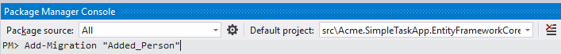
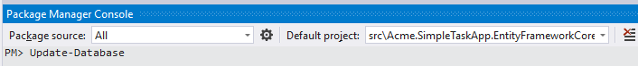
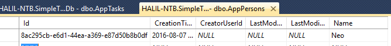
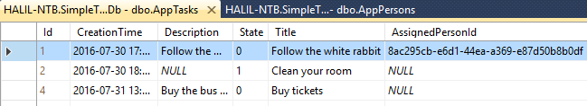
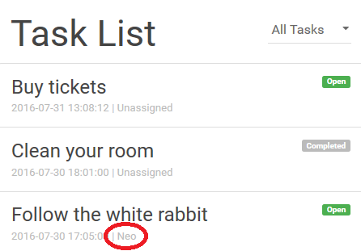
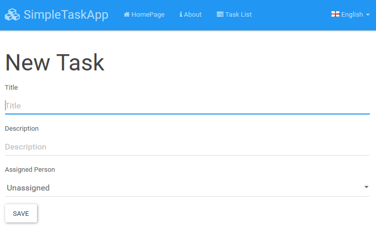

This is the second part of the "Using ASP.NET Core, Entity Framework Core and ASP.NET Boilerplate to Create NLayered Web Application" article series. See other parts:
I'll add Person concept to the application to assign tasks to people. So, I define a simple Person entity:
[Table("AppPersons")]
public class Person : AuditedEntity<Guid>
{
public const int MaxNameLength = 32;
[Required]
[StringLength(MaxNameLength)]
public string Name { get; set; }
public Person()
{
}
public Person(string name)
{
Name = name;
}
}
This time, I set Id (primary key) type as Guid, for demonstration. I also derived from AuditedEntity (which has CreationTime, CreaterUserId, LastModificationTime and LastModifierUserId properties) instead of base Entity class.
I'm also adding AssignedPerson property to the Task entity (only sharing the changed parts here):
[Table("AppTasks")]
public class Task : Entity, IHasCreationTime
{
//...
[ForeignKey(nameof(AssignedPersonId))]
public Person AssignedPerson { get; set; }
public Guid? AssignedPersonId { get; set; }
public Task(string title, string description = null, Guid? assignedPersonId = null)
: this()
{
Title = title;
Description = description;
AssignedPersonId = assignedPersonId;
}
}
AssignedPerson is optional. So, as task can be assigned to a person or can be unassigned.
Finally, I'm adding new Person entity to the DbContext class:
public class SimpleTaskAppDbContext : AbpDbContext
{
public DbSet<Person> People { get; set; }
//...
}
Now, I'm running the following command in the Package Manager Console:

And it creates a new migration class in the project:
public partial class Added_Person : Migration
{
protected override void Up(MigrationBuilder migrationBuilder)
{
migrationBuilder.CreateTable(
name: "AppPersons",
columns: table => new
{
Id = table.Column<Guid>(nullable: false),
CreationTime = table.Column<DateTime>(nullable: false),
CreatorUserId = table.Column<long>(nullable: true),
LastModificationTime = table.Column<DateTime>(nullable: true),
LastModifierUserId = table.Column<long>(nullable: true),
Name = table.Column<string>(maxLength: 32, nullable: false)
},
constraints: table =>
{
table.PrimaryKey("PK_AppPersons", x => x.Id);
});
migrationBuilder.AddColumn<Guid>(
name: "AssignedPersonId",
table: "AppTasks",
nullable: true);
migrationBuilder.CreateIndex(
name: "IX_AppTasks_AssignedPersonId",
table: "AppTasks",
column: "AssignedPersonId");
migrationBuilder.AddForeignKey(
name: "FK_AppTasks_AppPersons_AssignedPersonId",
table: "AppTasks",
column: "AssignedPersonId",
principalTable: "AppPersons",
principalColumn: "Id",
onDelete: ReferentialAction.SetNull);
}
//...
}
I just changed ReferentialAction.Restrict to ReferentialAction.SetNull. It does that: if I delete a person, assigned tasks to that person become unassigned. This is not important in this demo. But I wanted to show that you can change the migration code if you need. Actually, you always review the generated code before applying it to the database. After that, we can apply migration to our database:

When we open the database, we can see the new table and columns and add some test data:

I added a person and assigned to the first task:

I'll change the TaskAppService to return assigned person information. First, I'm adding two properties to TaskListDto:
[AutoMapFrom(typeof(Task))]
public class TaskListDto : EntityDto, IHasCreationTime
{
//...
public Guid? AssignedPersonId { get; set; }
public string AssignedPersonName { get; set; }
}
And including the Task.AssignedPerson property to the query. Just added the Include line:
public class TaskAppService : SimpleTaskAppAppServiceBase, ITaskAppService
{
//...
public async Task<ListResultDto<TaskListDto>> GetAll(GetAllTasksInput input)
{
var tasks = await _taskRepository
.GetAll()
.Include(t => t.AssignedPerson)
.WhereIf(input.State.HasValue, t => t.State == input.State.Value)
.OrderByDescending(t => t.CreationTime)
.ToListAsync();
return new ListResultDto<TaskListDto>(
ObjectMapper.Map<List<TaskListDto>>(tasks)
);
}
}
Thus, GetAll method will return Assigned person information with the tasks. Since we used AutoMapper, new properties will also be copied to DTO automatically.
At this point, we can change unit tests to see if assigned people are retrieved while getting the task list. First, I changed initial test data in the TestDataBuilder class to assign a person to a task:
public class TestDataBuilder
{
//...
public void Build()
{
var neo = new Person("Neo");
_context.People.Add(neo);
_context.SaveChanges();
_context.Tasks.AddRange(
new Task("Follow the white rabbit", "Follow the white rabbit in order to know the reality.", neo.Id),
new Task("Clean your room") { State = TaskState.Completed }
);
}
}
Then I'm changing TaskAppService_Tests.Should_Get_All_Tasks() method to check if one of the retrieved tasks has a person assigned (see the last line added):
[Fact]
public async System.Threading.Tasks.Task Should_Get_All_Tasks()
{
//Act
var output = await _taskAppService.GetAll(new GetAllTasksInput());
//Assert
output.Items.Count.ShouldBe(2);
output.Items.Count(t => t.AssignedPersonName != null).ShouldBe(1);
}
Note: Count extension method requires using System.Linq; statement.
Finally, we can change Tasks\Index.cshtml to show AssignedPersonName:
@foreach (var task in Model.Tasks)
{
<li class="list-group-item">
<span class="pull-right label label-lg @Model.GetTaskLabel(task)">@L($"TaskState_{task.State}")</span>
<h4 class="list-group-item-heading">@task.Title</h4>
<div class="list-group-item-text">
@task.CreationTime.ToString("yyyy-MM-dd HH:mm:ss") | @(task.AssignedPersonName ?? L("Unassigned"))
</div>
</li>
}
When we run the application, we can see it in the task list:

We can list tasks, but we don't have a task creation page yet. First, adding a Create method to the ITaskAppService interface:
public interface ITaskAppService : IApplicationService
{
//...
System.Threading.Tasks.Task Create(CreateTaskInput input);
}
And implementing it in TaskAppService class:
public class TaskAppService : SimpleTaskAppAppServiceBase, ITaskAppService
{
private readonly IRepository<Task> _taskRepository;
public TaskAppService(IRepository<Task> taskRepository)
{
_taskRepository = taskRepository;
}
//...
public async System.Threading.Tasks.Task Create(CreateTaskInput input)
{
var task = ObjectMapper.Map<Task>(input);
await _taskRepository.InsertAsync(task);
}
}
Create method automatically maps given input to a Task entity and inserting to the database using the repository. CreateTaskInput DTO is like that:
using System;
using System.ComponentModel.DataAnnotations;
using Abp.AutoMapper;
namespace Acme.SimpleTaskApp.Tasks.Dtos
{
[AutoMapTo(typeof(Task))]
public class CreateTaskInput
{
[Required]
[StringLength(Task.MaxTitleLength)]
public string Title { get; set; }
[StringLength(Task.MaxDescriptionLength)]
public string Description { get; set; }
public Guid? AssignedPersonId { get; set; }
}
}
Configured to map it to Task entity (using AutoMapTo attribute) and added data annotations to apply validation. We used constants from Task entity to use same max lengths.
I'm adding some integration tests into TaskAppService_Tests class to test the Create method:
using Acme.SimpleTaskApp.Tasks;
using Acme.SimpleTaskApp.Tasks.Dtos;
using Shouldly;
using Xunit;
using System.Linq;
using Abp.Runtime.Validation;
namespace Acme.SimpleTaskApp.Tests.Tasks
{
public class TaskAppService_Tests : SimpleTaskAppTestBase
{
private readonly ITaskAppService _taskAppService;
public TaskAppService_Tests()
{
_taskAppService = Resolve<ITaskAppService>();
}
//...
[Fact]
public async System.Threading.Tasks.Task Should_Create_New_Task_With_Title()
{
await _taskAppService.Create(new CreateTaskInput
{
Title = "Newly created task #1"
});
UsingDbContext(context =>
{
var task1 = context.Tasks.FirstOrDefault(t => t.Title == "Newly created task #1");
task1.ShouldNotBeNull();
});
}
[Fact]
public async System.Threading.Tasks.Task Should_Create_New_Task_With_Title_And_Assigned_Person()
{
var neo = UsingDbContext(context => context.People.Single(p => p.Name == "Neo"));
await _taskAppService.Create(new CreateTaskInput
{
Title = "Newly created task #1",
AssignedPersonId = neo.Id
});
UsingDbContext(context =>
{
var task1 = context.Tasks.FirstOrDefault(t => t.Title == "Newly created task #1");
task1.ShouldNotBeNull();
task1.AssignedPersonId.ShouldBe(neo.Id);
});
}
[Fact]
public async System.Threading.Tasks.Task Should_Not_Create_New_Task_Without_Title()
{
await Assert.ThrowsAsync<AbpValidationException>(async () =>
{
await _taskAppService.Create(new CreateTaskInput
{
Title = null
});
});
}
}
}
First test creates a task with a title, second one creates a task with a title and assigned person, the last one tries to create an invalid task to show the exception case.
We know that TaskAppService.Create is properly working. Now, we can create a page to add a new task. Final page will be like that:

First, I added a Create action to the TaskController in order to prepare the page above:
using System.Threading.Tasks;
using Abp.Application.Services.Dto;
using Acme.SimpleTaskApp.Tasks;
using Acme.SimpleTaskApp.Tasks.Dtos;
using Acme.SimpleTaskApp.Web.Models.Tasks;
using Microsoft.AspNetCore.Mvc;
using Microsoft.AspNetCore.Mvc.Rendering;
using System.Linq;
using Acme.SimpleTaskApp.Common;
using Acme.SimpleTaskApp.Web.Models.People;
namespace Acme.SimpleTaskApp.Web.Controllers
{
public class TasksController : SimpleTaskAppControllerBase
{
private readonly ITaskAppService _taskAppService;
private readonly ILookupAppService _lookupAppService;
public TasksController(
ITaskAppService taskAppService,
ILookupAppService lookupAppService)
{
_taskAppService = taskAppService;
_lookupAppService = lookupAppService;
}
//...
public async Task<ActionResult> Create()
{
var peopleSelectListItems = (await _lookupAppService.GetPeopleComboboxItems()).Items
.Select(p => p.ToSelectListItem())
.ToList();
peopleSelectListItems.Insert(0, new SelectListItem { Value = string.Empty, Text = L("Unassigned"), Selected = true });
return View(new CreateTaskViewModel(peopleSelectListItems));
}
}
}
I injected ILookupAppService that is used to get people combobox items. While I could directly inject and use IRepository<Person, Guid> here, I preferred this to make a better layering and re-usability. ILookupAppService.GetPeopleComboboxItems is defined in application layer as shown below:
public interface ILookupAppService : IApplicationService
{
Task<ListResultDto<ComboboxItemDto>> GetPeopleComboboxItems();
}
public class LookupAppService : SimpleTaskAppAppServiceBase, ILookupAppService
{
private readonly IRepository<Person, Guid> _personRepository;
public LookupAppService(IRepository<Person, Guid> personRepository)
{
_personRepository = personRepository;
}
public async Task<ListResultDto<ComboboxItemDto>> GetPeopleComboboxItems()
{
var people = await _personRepository.GetAllListAsync();
return new ListResultDto<ComboboxItemDto>(
people.Select(p => new ComboboxItemDto(p.Id.ToString("D"), p.Name)).ToList()
);
}
}
ComboboxItemDto is a simple class (defined in ABP) to transfer a combobox item data. TaskController.Create method simply uses this method and converts the returned list to a list of SelectListItem (defined in AspNet Core) and passes to the view using CreateTaskViewModel class:
using System.Collections.Generic;
using Microsoft.AspNetCore.Mvc.Rendering;
namespace Acme.SimpleTaskApp.Web.Models.People
{
public class CreateTaskViewModel
{
public List<SelectListItem> People { get; set; }
public CreateTaskViewModel(List<SelectListItem> people)
{
People = people;
}
}
}
Create view is shown below:
@using Acme.SimpleTaskApp.Web.Models.People
@model CreateTaskViewModel
@section scripts
{
<environment names="Development">
<script src="~/js/views/tasks/create.js"></script>
</environment>
<environment names="Staging,Production">
<script src="~/js/views/tasks/create.min.js"></script>
</environment>
}
<h2>
@L("NewTask")
</h2>
<form id="TaskCreationForm">
<div class="form-group">
<label for="Title">@L("Title")</label>
<input type="text" name="Title" class="form-control" placeholder="@L("Title")" required maxlength="@Acme.SimpleTaskApp.Tasks.Task.MaxTitleLength">
</div>
<div class="form-group">
<label for="Description">@L("Description")</label>
<input type="text" name="Description" class="form-control" placeholder="@L("Description")" maxlength="@Acme.SimpleTaskApp.Tasks.Task.MaxDescriptionLength">
</div>
<div class="form-group">
@Html.Label(L("AssignedPerson"))
@Html.DropDownList(
"AssignedPersonId",
Model.People,
new
{
@class = "form-control",
id = "AssignedPersonCombobox"
})
</div>
<button type="submit" class="btn btn-default">@L("Save")</button>
</form>
I included create.js defined like that:
(function($) {
$(function() {
var _$form = $('#TaskCreationForm');
_$form.find('input:first').focus();
_$form.validate();
_$form.find('button[type=submit]')
.click(function(e) {
e.preventDefault();
if (!_$form.valid()) {
return;
}
var input = _$form.serializeFormToObject();
abp.services.app.task.create(input)
.done(function() {
location.href = '/Tasks';
});
});
});
})(jQuery);
Let's see what's done in this JavaScript code:
Here is the content of jquery-extensions.js:
(function ($) {
//serializeFormToObject plugin for jQuery
$.fn.serializeFormToObject = function () {
//serialize to array
var data = $(this).serializeArray();
//add also disabled items
$(':disabled[name]', this)
.each(function () {
data.push({ name: this.name, value: $(this).val() });
});
//map to object
var obj = {};
data.map(function (x) { obj[x.name] = x.value; });
return obj;
};
})(jQuery);
Finally, I added an "Add Task" button to the task list page in order to navigate to the task creation page:
<a class="btn btn-primary btn-sm" asp-action="Create">@L("AddNew")</a>
We can remove Home and About page from the application if we don't need. To do that, first change HomeController like that:
using Microsoft.AspNetCore.Mvc;
namespace Acme.SimpleTaskApp.Web.Controllers
{
public class HomeController : SimpleTaskAppControllerBase
{
public ActionResult Index()
{
return RedirectToAction("Index", "Tasks");
}
}
}
Then delete Views/Home folder and remove menu items from SimpleTaskAppNavigationProvider class. You can also remove unnecessary keys from localization JSON files.
You can get the latest source code here https://github.com/aspnetboilerplate/aspnetboilerplate-samples/tree/master/SimpleTaskSystem-Core